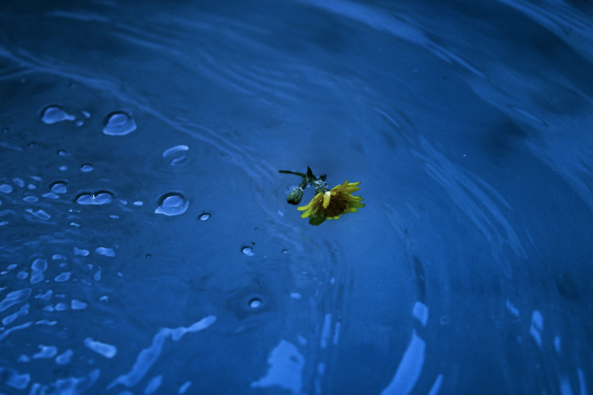

Kies een Thema
Elke quiz helpt je meer te leren over een belangrijk aspect van je gezondheid

Voeding & Dietetiek
Leer over gezonde voeding en hoe je lichaam de juiste brandstof krijgt.
Start QuizOntdek hoe je een gezondere levensstijl kunt bereiken. Test je kennis met onze interactieve quizzen over beweging, voeding en rust.
Bekijk de QuizzenDe gemeente Otterdam zet zich in voor de gezondheid van haar inwoners. Op dit platform vind je informatie en quizzen over drie belangrijke pijlers van een gezonde leefstijl. Leer meer over hoe je jouw welzijn kunt verbeteren!
Elke quiz helpt je meer te leren over een belangrijk aspect van je gezondheid

Leer over gezonde voeding en hoe je lichaam de juiste brandstof krijgt.
Start QuizKies een willekeurige quiz en test direct je kennis!